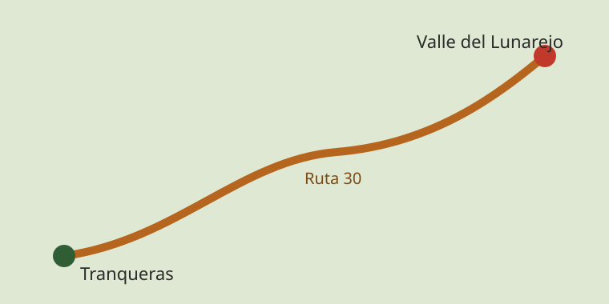

Cómo llegar
El Valle del Lunarejo queda en Rivera, a 95 km de la capital departamental por la ruta 30.

Desde Montevideo
- En auto: ruta 5 hasta Tacuarembó y ruta 30 hacia Artigas (unas 6 h).
- En ómnibus: hasta Tranqueras y desde ahí con un servicio local.
Después de lluvias fuertes, el último tramo de balasto puede quedar cortado.